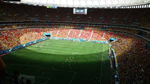
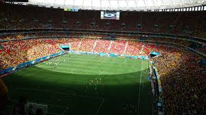

Kalahkan Spanyol Lewat Adu Penalti, Rusia ke Perempatfinal

moskow - Rusia berhasil melaju ke babak perempatfinal Piala Dunia 2018. Tim Beruang Merah menang adu penalti atas Spanyol dengan skor 4-3.
Dalam pertandingan di Luzhniki Stadium, Minggu (1/7/2018) malam WIB, Spanyol bisa menguasai jalannya pertandingan dengan mendominasi penguasaan bola hingga 74 persen. Babak 1 selesai 1-1 setelah gol bunuh diri Sergei Ignashevich pada menit ke-12, disamakan Rusia lewat penalti Artem Dzyuba di menit ke-41.
Spanyol gagal membobol gawang Rusia, bahkan hingga ke babak tambahan. Pertandingan pun lanjut ke babak penalti.
Dengan kemenangan ini, Rusia masih akan menunggu pemenang laga antara Kroasia melawan Denmark untuk dihadapi di babak perempatfinal Piala Dunia 2018.
Jalannya Pertandingan
Spanyol vs Rusia berimbang di babak pertama. Gol bunuh diri Ignasevich berhasil disamakan Dzyuba lewat titik putih.
Baca juga: Spanyol Vs Rusia Sementara 1-1
Jordi Alba mempunyai peluang pada menit ke-47. Tendangannya sudah tepat sasaran, tapi masih bisa diantisipasi oleh kiper Rusia, Igor Akinfeev.
Peluang Isco pada menit ke-58 juga masih belum berbuah hasil. Tendangannya bisa diblok, hingga cuma berbuah tendangan sudut. Peluang sepak pojok itu tak bisa dimanfaatkan dengan baik, bolanya disapu pemain belakang Rusia.
Spanyol melakukan pergantian pemain pertama pada menit ke-67. Andres Iniesta dimasukkan, menggantikan David Silva. Sebelumnya, Rusia sudah memanfaatkan jatah ganti pemain dengan memasukkan Vladimir Granat menggantikan Yuri Zhirkov di menit ke-46, Aleksandr Samedov digantikan di menit ke-61, dan Artem Dzyuba digantikan Fedor Smolov di menit ke-65.
Nacho yang tak banyak membantu serangan di sisi kanan, juga ditarik. Dani Carvajal dimasukkan pada menit ke-70.
Spanyol terus mendominasi pertandingan hingga menit ke-80. Penguasaan bolanya 73 persen, tapi baru melepaskan tembakan on target tiga kali, dua di antaranya dibukukan di babak kedua.
Akinfeev melakukan penyelamatan di menit ke-85. Bola tendangan Iniesta bisa ditepis, rebound Aspas juga sama. Bolanya menjauh dari gawang Rusia.
Peluang Spanyol lewat tendangan sudut di menit ke-89 juga belum membuahkan hasil. Umpan silang Isco gagal dimaksimalkan.
Hingga waktu normal habis tak ada gol tambahan, pertandingan lanjut ke babak tambahan.
Spanyol masih belum bisa menembus pertahanan Rusia hingga babak tambahan berjalan 6 menit. Tendangan jarak jauh Koke masih melayang jauh dari gawang Rusia.
Peluang Spanyol lewat Marco Asensio pada menit ke-100 juga masih aman di tangan Akinfeev. Skor masih 1-1.
Sundulan Gerard Pique meneruskan umpan tendangan Koke di menit 105 masih ditangkap Akinfeev. Pertandingan masih sama kuat di jeda babak tambahan.
Akinfeev memelakukan penyelamatan. Tendangan Rodrigo pada menit ke-109 bisa diblok. Bola rebound disambar oleh Dani Carvajal, tapi juga berhasil dihalangi masuk ke gawang. Tak ada gol hingga 120 menit, laga lanjut ke babak penalti.
Iniesta sukses menjadi penendang pertama Spanyol, Smolov menyamakan kedudukan untuk Spanyol.
Pique juga sukses menaklukkan Akinfeev. Ignasevich berhasil menaklukkan De Gea. Koke menjadi eksekutor Spanyol yang gagal, ditepis dengan sempurna oleh Akinfeef. Golovin mampu membawa Rusia unggul 3-2.
Sergio Ramos isa menyamakan skor sebagai penendang keempat. Denis Cheryshev kembali membawa Rusia unggul 4-3. Aspas menjadi penendang terakhir gagal menaklukkan Akinfeev. Rusia melaju ke perempatfinal usai menang adu penalti 4-3.
Susunan Pemain
Spanyol: De Gea; Nacho (Carvajal 70), Pique, Ramos, Alba; Busquets, Koke; Asensio (Rodrigo 104), Isco; Silva (Iniesta 67); Diego Costa (Aspas 80)
Rusia: Akinfeev; Fernandes, Kudryashov, Kutepov, Ignasevich, Zhirkov (Granat 46); Samedov (Cheryshev 61), Kuzyaev (Yerokhin 97), Golovin, Zobnin; Dzyuba (Smolov 65)